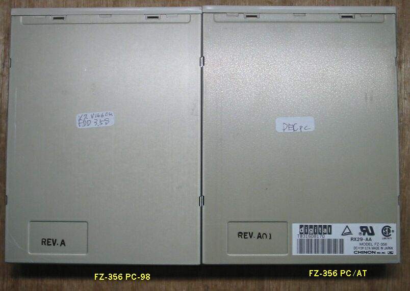
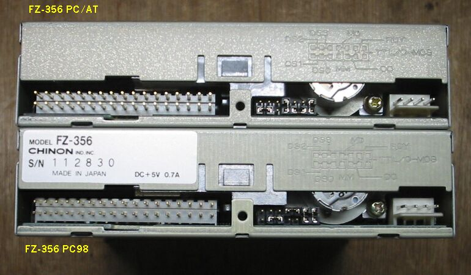
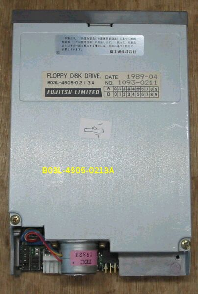
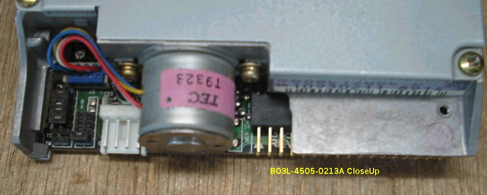

(その１)CHINON FZ-356をPC-98で使用できるようにする
JUNKなELECOM製外付けFDD、FDD-3.5Sを分解したところ、CHINON製noFDD、FZ-356が
出てきました。CHINONはカメラメーカとしては知っていましたが、FDDを作っていたことが
あったのですね。インターネットを検索しても、カメラかワインしかヒットしません。
このFDDをPC-98に接続したところ、V-7とV-166で動作を確認できました。9801DXでは、
残念ながら正常に動作しません。コネクタ部のショートプラグ設定が分かればいいのですが。
いろいろ調べた結果、次のことだけが分かりました。
記号 意味 プラグ
・DS0 ; Drive Select0 3-5 on
・DS1 ; Drive Select1 1-3 on
・DS2 ; Drive Select2 2-4 on
・DS3 ; Drive Select3 4-6 on
・MM ; I/F 4pin Mode Select In 7-8 on
・MD ; I/F 2pin Mode Select In 8-10 on
・RDY ; I/F 34pin Ready Out 11-12 on
・DC ; I/F 34pin Disk Change Out 9-11 on
・TTL ; OpenCorrector OutPut 13-14 on
・CMOS ; 3 State OutPut 13-14 off
そうしているうちに、これもJUNKなDECpc433dxLPが入手でき、486遊びができたのですが、425sxLP
もあるので、433dxLPを分解し処分することにしました。（486遊びについては、別ページのマザー
ボード遊びに書く予定）そこから、またFZ-356が出てきました。この２個のFDDのショートプラグを
比較すれば、PC/AT用のFZ-356をPC-98用に変更（改造ではなく）する事ができるはずです。
FZ-356を上から見たところ

FZ-356 コネクタ部

REV.AのPC-98用FDDの設定はこのようになっていました。
・DS1 ; on
・MD ; on
・RDY ; on
・TTL ; on
REV.A01のPC/AT用FDDの設定はこのようになっていました。
・DS0 ; on
・MD ; on
・RDY ; on
・TTL ; on
これを参考に、設定を変更すればいいはずですので、暇を見つけて実験してみたいと思います。
（2003/08/10 記）
実験してみました。使用したのは、PC-9821V12/S7RBで、下記の設定でREV.A01のFDDが使用可能になりました。
・DS0 ; on
・MM ; on
・RDY ; on
・TTL ; on
（2003/08/10 追記）
(その２)FM-TOWNS用のFDDがPC-98で使用できる
PC/AT互換機ではないかもしれませんが、初代FM-TOWNSから回収した3.5インチFDDが２台あります。HAMLINさんのデータによると、
98でも使用可能で、５インチとして認識されるとのことなので、実験してみました。

銘板には以下のような記述があります。
・型式；03L-4505-0213A
・DATE；1989-04
・No. ；1093-0211
・メーカ：FUJITSU LIMITED
さらに、コネクタの付いている、プリント基板には以下の記述があり、
・PN134526-41
・REV.D
ドライヴ（回転部分）の基盤には
・DFX-64D3
・MATSUSITA
と書いてあります。もう一つのラベルを読み落とすところでした。34pinのコネクタの上のアルミ台ダイキャスト
部分に、YE-DATA YD-686C1506C B S/N 10930211 8914 のラベルがあります。
実際に、PC-9821Xa10/K8につないでみると、Windows98から見ると、Bドライブに５インチFDDがありました。
1.2MBのFDは読めます。1.44MBはもちろんダメです。640KBも認識しませんでした。1.2MBFDはDOSからも読め、Boot
ドライブになりました。
このドライブを子細に見ると、下の写真のように、電源コネクタの隣に、２種類のジャンパーがあります。
一つは４pinで、DS0からDS3、ドライブセレクトと読めます。もう一つは７pinで、P3、P2、P1、OP、WR、TD、TWと並んでおり、
P2、P1、OP、WRがonになっています。この意味が分かれば、設定が変更できるかもしれません。
もう少し調べてから、実験してみたいと思います。

（2003/09/08 記）
ホームページに戻る